请自行解决代理问题 #
开启PowerShell开发者选项 #
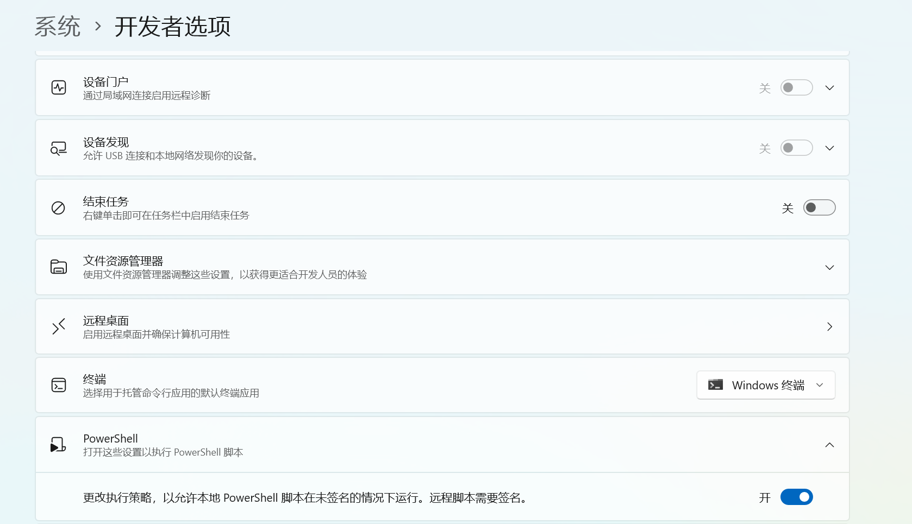
安装Nerd Font #
以MesloLG Nerd Font为例
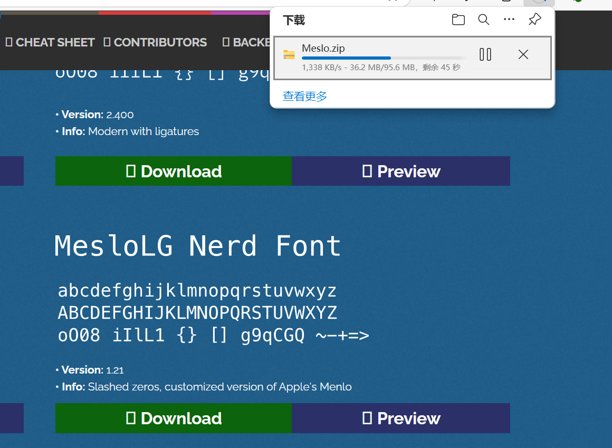
下载解压, 全选字体文件, 右键安装即可
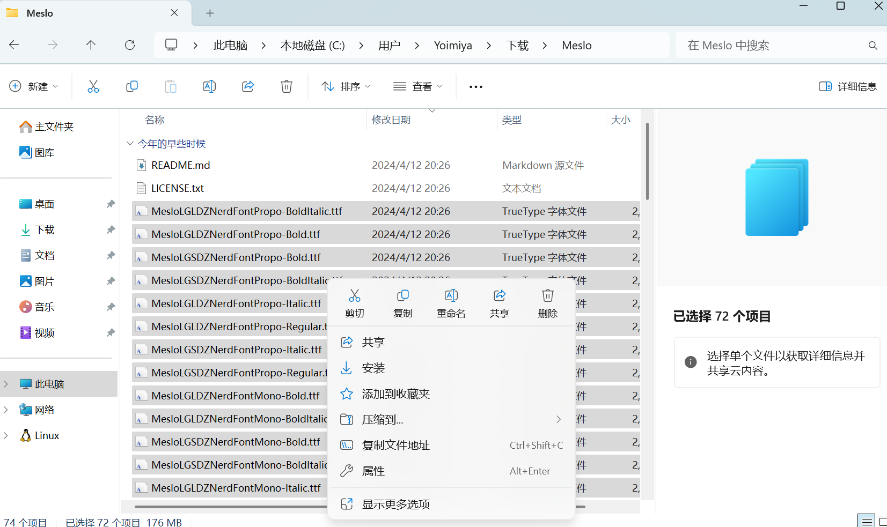
更改终端字体 #
打开终端, 设置处选择默认配置, 外观, 字体, 选择刚刚安装的Nerd字体, 保存
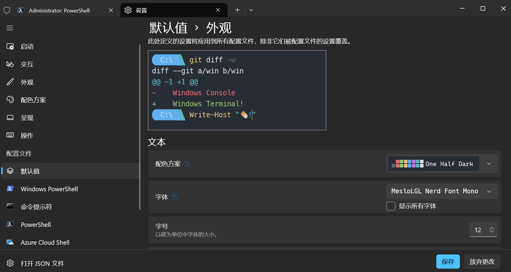
(可选)进行其他配置 #
可在设置处选择开启亚克力以及背景透明度
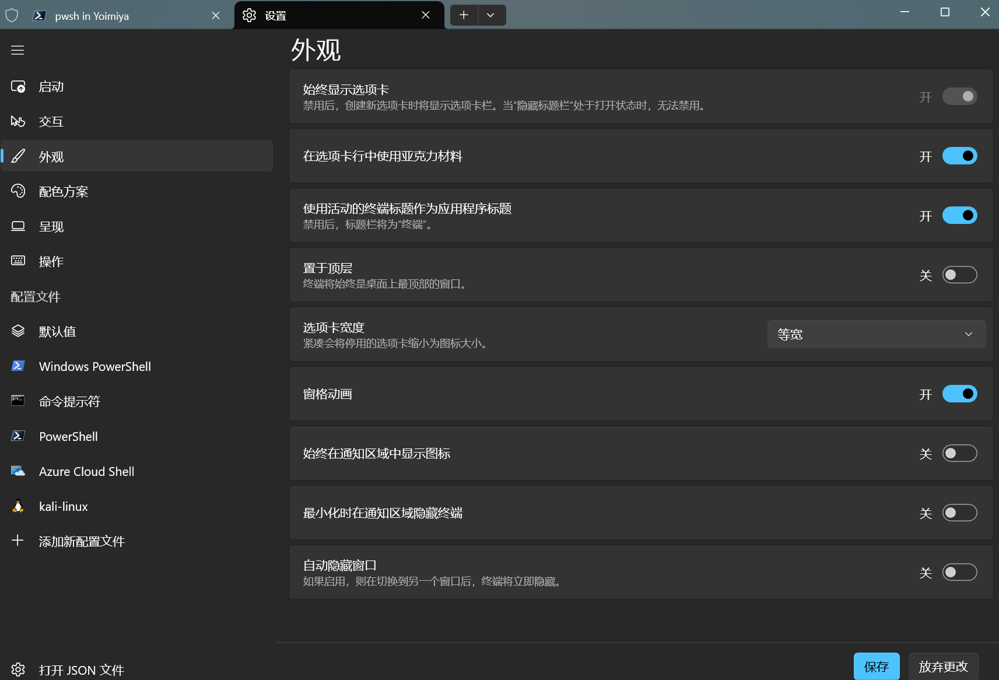
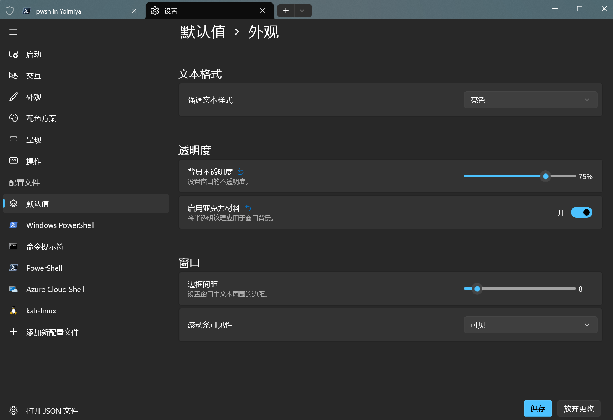
(可选, 可能导致其他应用程序乱码)把Windows终端设置默认UTF-8 #
在控制面板的时钟和区域内更改, 完成后重启电脑
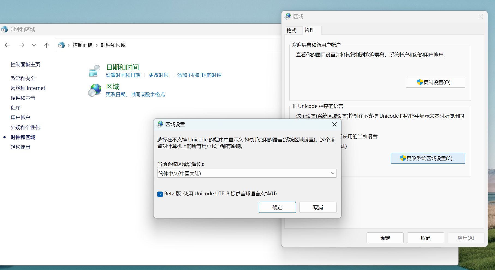
安装oh-my-posh #
使用winget
winget install JanDeDobbeleer.OhMyPosh -s winget
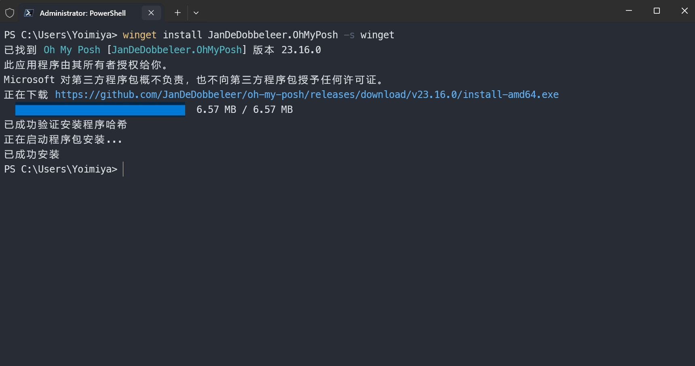
安装完成后重启终端
配置Windows的oh-my-posh #
新建并编辑配置文件
New-Item -Path $PROFILE -Type File -Force
notepad $PROFILE
在此处找到适合的主题, 在记事本处输入如下内容
oh-my-posh init pwsh --config "$env:POSH_THEMES_PATH/powerlevel10k_rainbow.omp.json" | Invoke-Expression
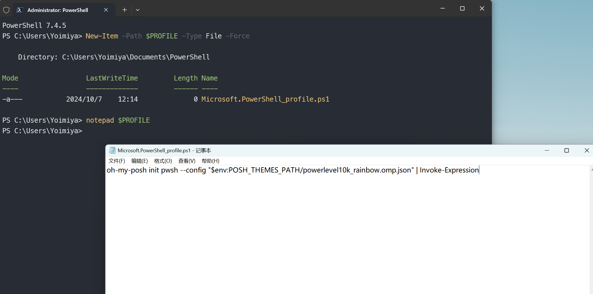
关掉并重新打开终端, 即可看到主题效果
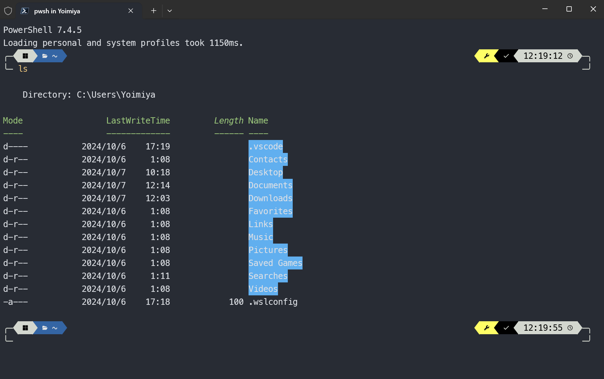
配置WSL的oh-my-posh(以zsh为例) #
在WSL内输入如下命令
sudo apt install unzip -y
curl -s https://ohmyposh.dev/install.sh | bash -s
echo 'export PATH=$PATH:/home/yoimiya/.local/bin' >> ~/.zshrc
source ~/.zshrc
cd
wget https://raw.githubusercontent.com/JanDeDobbeleer/oh-my-posh/main/themes/powerlevel10k_rainbow.omp.json
echo 'eval "$(oh-my-posh init zsh --config ~/powerlevel10k_rainbow.omp.json)"' >> ~/.zshrc
echo 'cd ~/' >> ~/.zshrc
source ~/.zshrc
完成后可以看到主题效果
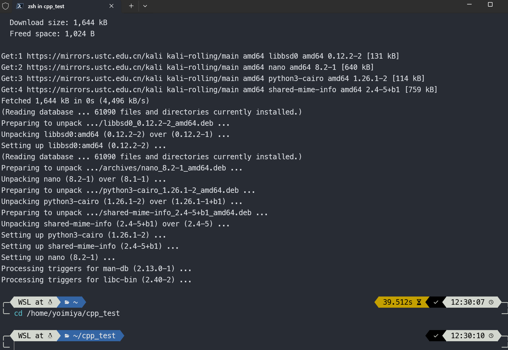
使用Terminal-Icons添加缺少的文件夹或文件图标 #
在Windows终端输入Install-Module -Name Terminal-Icons -Repository PSGallery
然后把Import-Module -Name Terminal-Icons添加到$PROFILE文件即可
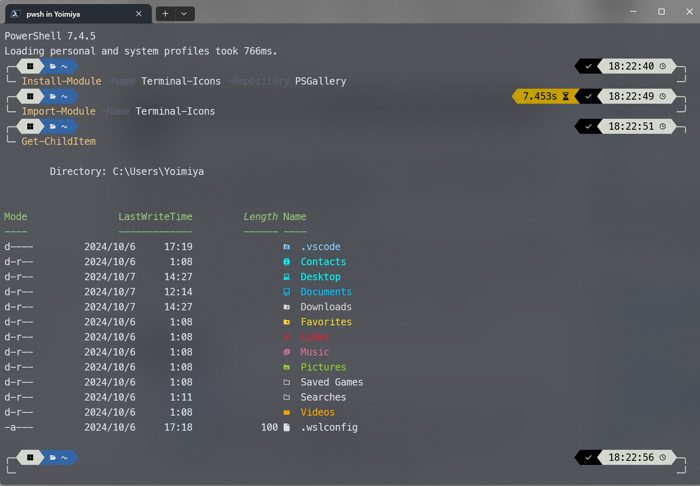
补充说明 #
- 可以在Windows应用商店安装新版记事本和截图工具等
- 在Windows的终端输入PowerShell命令可以按
F2切换历史记录显示方式 - PowerShell启动命令建议:
Enable-ExperimentalFeature PSCommandNotFoundSuggestion